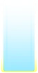

So, how does this game even work?
This is a quick and simple tutorial if you want to try it out (or if you somehow cant keep up with the in-game tutorial). Afterwards, you should have a basic understanding of Phigros (i hope).
Notes
Judgement Line
Judgement
| # | Type of note | Description | Image |
|---|---|---|---|
| 1 | Tap notes | Tap notes are colored sky blue. Tap once when they reach the judgement line | |
| 2 | Hold notes | Hold notes are colored sky blue. Tap and hold when they reach the judgement line, and keep holding until it fully passes over the line. |  |
| 3 | Flick notes | Flick notes are colored red. Flick in any direction when they reach the judgement line. | |
| 4 | Drag notes | Drag notes are colored yellow, and often appear in large amounts at once. Hold (you dont need to tap them constantly) when they reach the judgement line. |
This is what makes Phigros unique. You should NOT expect it to be a single static line like your average vertical scroll rythm game (mania-style)
This should explain why ↓
Judgement lines may rotate, change opacity and move around the screen.
There may be multiple judgement lines.
Notes may approach their respective judgement lines from any position on the screen,
and can also serve as judgement lines themselves.
The edge of the screen may also serve as a judgement line.
Judgement lines are usually white, but if 'FC/AP indicator' is turned on in Settings,
they will be colored yellow when on track for an
AP (All-Perfect),
and blue if on track for a
FC (Full Combo).
When hitting a note, you must hit it inside a vertical column extending from the note to the edges of the screen to register as a valid hit. When correctly doing so, you will get one of three different judgements, Perfect, Good or Bad, depending on the accuracy of the hit. If the note wasn't hit at all, or not hit inside the column, you will get a Miss. Each judgement will give a certain amount of accuracy and changes in the combo count.
| Judgement | Combo | Accuracy | Timing window | |
|---|---|---|---|---|
| Normal mode | Challenge mode | |||
| Perfect | Increases by 1 | 100% | ±80ms | ±40ms |
| Good | 60% | ±160ms | ±75ms | |
| Bad | Resets back to 0 | 0% | ±180ms | ±140ms |
| Miss | N/A | |||